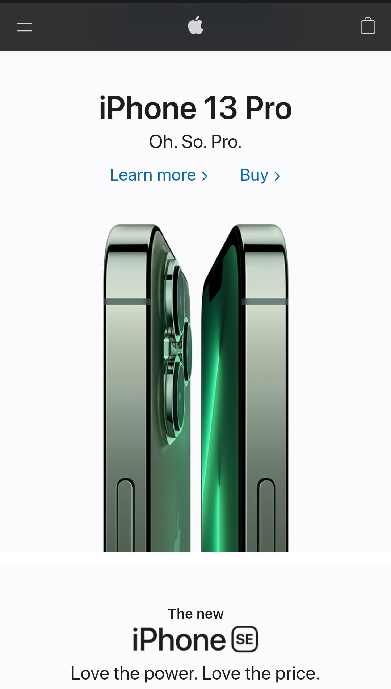

Contrast
BYU Pathway
byupathway.org/I see very useful the contrast between the blue background and the yellow buttons, it makes you realize instantly where to go to apply or look for more information.
Repetition
Copa airlines
copaair.com/The repetition here gives the user a sense of an organized site, well structured, and easy to interact with.
White Space
Apple
apple.com/ The white spaces here make it easy for people to read the information and navigate through the content. The pattern followed here is a brief text and a large image, with a lot of margin on the sides.